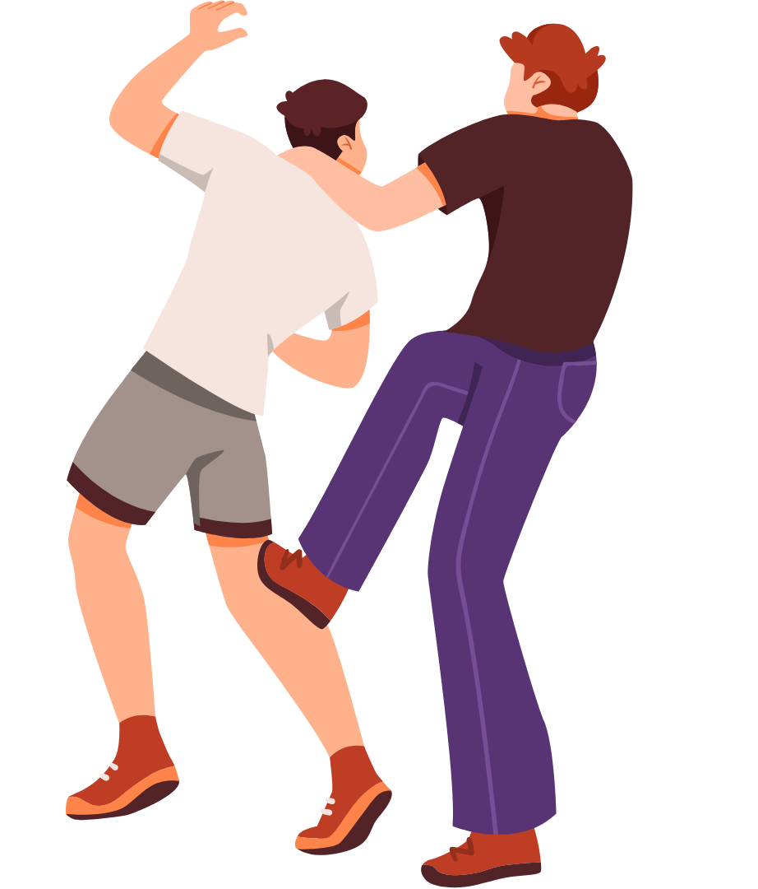

O Ateneu
Obra-prima de Raul Pompeia, O Ateneu foi publicado pela primeira vez em 1888. É um marco do nascimento da literatura moderna brasileira. O romance é narrado pelo protagonista, Sérgio, que é enviado pela família a um importante colégio interno no Rio de Janeiro. A trajetória de Sérgio no internato marca o fim de sua infância e a perda de sua inocência.